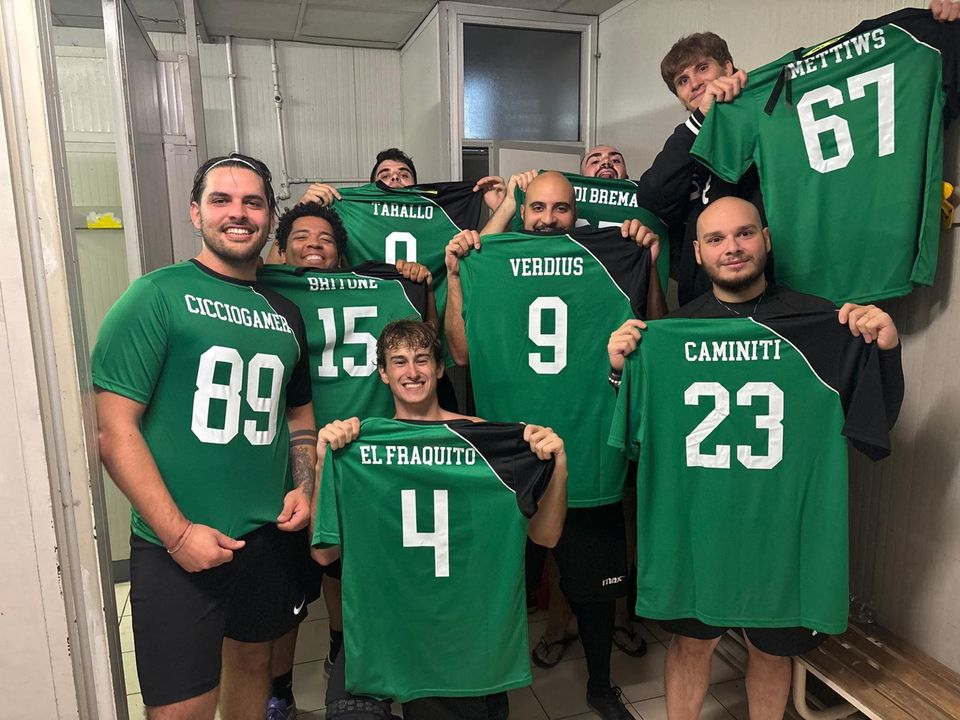
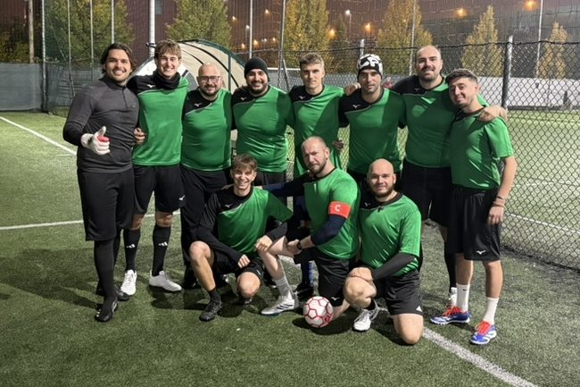

Mazzola Cup
Stagione 2026/27, girone B. Si gioca in settimana, la sera, al campo Mazzola di Beinasco.
-
Horto Muso 10–6 Pitone FC
Gol: CiccioGamer 6, Tarallo 3, G. di Brema 1
-
Horto Muso 3–8 I Ragazzi Di Piazza
Gol: CiccioGamer 1, Jerry SC 1, Tarallo 1
-
Horto Muso 6–8 Cimi FC
Gol: CiccioGamer 2, G. di Brema 1, Jerry SC 1, The Rock 1, Verdius 1
-
Horto Muso 5–3 Porcheria FC
Gol: El Fraquito 3, P. Bonolis 1, Tarallo 1
- Fireball – Horto Muso
- Fuman Team – Horto Muso
- CSKA la rissa – Horto Muso
- Los Nigros – Horto Muso
- Longobarda – Horto Muso
- Fireball – Horto Muso
Classifica
Girone B, regular season. Aggiornata a , dal sito del torneo.
| # | Squadra | Pt | G | V | N | P | GF | GS | DR |
|---|---|---|---|---|---|---|---|---|---|
| 1 | CSKA la rissa | 12 | 4 | 4 | 0 | 0 | 26 | 10 | +16 |
| 2 | Fuman Team | 10 | 4 | 3 | 1 | 0 | 17 | 5 | +12 |
| 3 | I Ragazzi Di Piazza | 10 | 4 | 3 | 1 | 0 | 29 | 19 | +10 |
| 4 | Los Nigros | 7 | 4 | 2 | 1 | 1 | 18 | 15 | +3 |
| 5 | Cimi FC | 7 | 4 | 2 | 1 | 1 | 17 | 15 | +2 |
| 6 | Horto Muso | 6 | 4 | 2 | 0 | 2 | 24 | 25 | −1 |
| 7 | Fireball | 3 | 4 | 1 | 0 | 3 | 19 | 24 | −5 |
| 8 | Longobarda | 3 | 4 | 1 | 0 | 3 | 13 | 24 | −11 |
| 9 | Porcheria FC | 0 | 4 | 0 | 0 | 4 | 19 | 29 | −10 |
| 10 | Pitone FC | 0 | 4 | 0 | 0 | 4 | 14 | 30 | −16 |
La rosa
Quindici maglie, un solo cavallo. In campo giochiamo a rombo: portiere, un difensore, due ali e il pivot. Chi non ha un ruolo fisso è universale: gioca dove serve. In porta El Fraquito e Mettiws si danno il cambio.
Maglia verde con pannello nero in diagonale sulla spalla e scollo a V nero, pantaloncini neri. Nome e numero bianchi sulla schiena.
-
Tarallo
Gentile Alessio
Difensore -
El Fraquito
Chiarelli Alessandro
Portiere -
Cimino
Di Giacomo Gabriele
Universale -
Kraken
Camillò Leonardo
Universale -
Amprino
Amprino Matteo
Universale -
Jerry SC
Pezzo Domenico
Universale -
Verdius
Verde Cristian
Universale -
P. Bonolis
Franzoso Gabriele
Universale -
The Rock
Paratore Pietro
Universale -
Britone
Reis Brito Filipe
Universale -
Caminiti
Salis Giuseppe
Universale -
G. di Brema
Susa Gabriele
Universale -
Mettiws
Salvalaggio Matteo
Portiere -
Il Pinguino
Gargiso Andrea
Allenatore -
CiccioGamer
Villano Giuliano
Pivot
La squadra
-

-

-